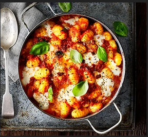

Chorizo & mozzarella gnocchi bake recipe

Description
Easy and testy chrizo & mozzarella gnochi recipe for healthy lifstyle.
Ingredients
- 1 tbsp olive oil
- 1 onion , finely chopped
- 2 garlic cloves , crushed
- 120g chorizo , diced
- 2 x 400g cans chopped tomatoes
- 1 tsp caster sugar
- 600g fresh gnocchi
- 125g mozzarella ball, cut into chunks
- small bunch of basil , torn
- green salad , to serve